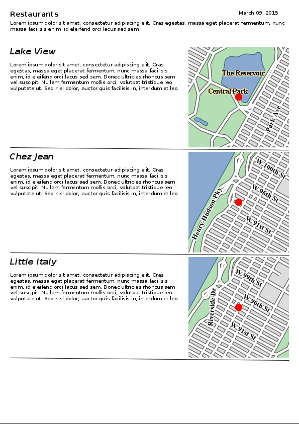

MapFish Print 3
Maps, Templates and PDF
Marion Baumgartner


Printing Maps
- An essential requirement in web mapping solutions
- Typical requirements:
- resolution
- different format (A4, A3, A0, ...)
- multiple templates and layouts
- different geo-data
- ...
CSS Stylesheets
Javascript base in OL v6
Map Fish Print
- Java Library & Web application
- Creation of a PDF with map components
Architecture
|
Mapping |
Layout |
|
Framework |
|
|
MapFish Print Web API/ Security /Widgets |
|
The Process
Configuration: config.yaml
templates:
A4 portrait: !template
reportTemplate: report.jrxml
attributes:
title: !string
default: "Countries"
map: !map
maxDpi: 400
width: 780
height: 330
processors:
- !reportBuilder
directory: '.'
- !createMap {}
Configuration: report.jrxml
The Process
JSON Request
{
"layout": "A4 portrait",
"outputFormat": "pdf",
"attributes": {
"map": {
"longitudeFirst": true,
"center": [5, 45],
"scale": 100000000,
"projection": "EPSG:4326",
"dpi": 72,
"rotation": 0,
"layers": [{
"type": "geojson",
"geoJson": "file://countries.geojson",
"style": {
"version": "2",
"*": {
"symbolizers": [{
"type": "polygon",
"fillColor": "#5E7F99",
"fillOpacity": 1,
"strokeColor": "#CC1D18",
"strokeOpacity": 1,
"strokeWidth": 1
}]
}
}
}]
}
}
}
Setting it all together in a Web-Application


Using the application in a ready Docker image
- clone the repo:
$ git clone git@github.com:marionb/mfp_examples.git - to get started - in the cloned folder run:
$ make serve
Creating the PDF
- Using a Browser: http://localhost:8680/
-
Using a bash command:
$ curl -XPOST -d @requestData.json \ -H " Content-Type: application/json" \ http://localhost:8680/print/default/buildreport.pdf \ -o ExpectedResult.pdf
Suported geo-data
- Vector
- GML/WFS
- GeoJSON
- Raster
- XYZ Tiles (OSM, ...)
- (Tiled) WMS
- WMTS
- GeoTIFF
Styles
- Full GeoTools styling with SLD
- Custom JSON styling (similar to OpenLayers)
More Options
Attribute Tables

Data-sources
(e.g. arbitrary number of maps in a report)

Charts
External data-sources (databases)

Client side support

Plugable Architecture
| Map Layers | Processors | |
| Widget | Attributes | |
| Output Formats | Report Storage |
MapFish Print 3
Some Links